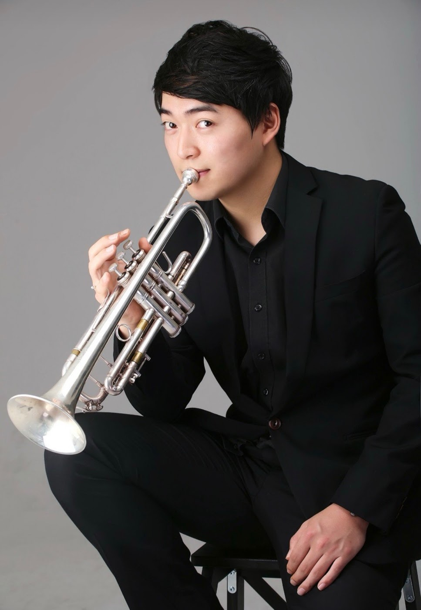

서초 트럼펫, 트롬본 1:1 개인레슨 트럼펫 개인레슨, 트롬본 개인레슨, 트럼펫 입시, 트롬본 입시, 군악대 실기 대비반을 1:1 맞춤으로 운영합니다.
1:1 금관악기 레슨
처음 악기를 잡는 입문자부터 입시·취미 목표까지, 호흡·발음·음정을 기초부터 차근차근. 무료 체험 레슨으로 먼저 확인해 보세요.

"실전 무대 경험을 바탕으로 한 확실한 연주 지도"
밝고 화려한 트럼펫의 음색을 처음 만나는 순간부터 함께합니다. 호흡과 발음(아티큘레이션)의 기본기를 탄탄히 잡아드리며, 왕초보부터 입시를 준비하는 학생까지 눈높이에 맞춰 눈에 보이는 변화를 만들어 드립니다.
경력
"현장에서 익힌 실전 감각, 탄탄한 기본기로 이어지는 연주 지도"
부드럽고 웅장한 트롬본 특유의 울림을 낼 수 있도록 슬라이드 포지션과 호흡을 처음부터 차근차근 짚어드립니다. 정확한 음정과 편안한 소리를 함께 만들어가는 1:1 레슨을 지향합니다.
경력
Curriculum
취미반 · 입시반 · 군악대 대비반 중 목표에 맞는 과정을 선택하세요. 개인 실력에 맞춰 세부 내용이 조정됩니다.
커리큘럼 페이지 자세히 보기 →
* 개인 실력에 맞춰 커리큘럼이 변경될 수 있습니다.
당연합니다. 수강생의 80% 이상이 악기를 처음 잡아보는 입문자입니다. 호흡법, 입 모양, 소리 내는 법부터 차근차근 1:1 맞춤형으로 알려드리기 때문에 누구나 즐겁게 배우실 수 있습니다.
두 악기는 매력이 아주 다릅니다. 화려하고 높은 음역대의 트럼펫과 부드럽고 웅장한 슬라이드 방식의 트롬본 중 고민되신다면 선생님의 도움을 받아보세요.
금관악기는 소리가 크기 때문에 집에서 연습하기 쉽지 않죠. 레슨실 대관 안내나 약음기(Mute) 사용법을 안내해 드립니다. 약음기를 사용하면 밤 시간대에도 이웃에게 방해되지 않게 조용히 연습할 수 있습니다.
네, 문제없습니다. 계이름 읽는 법부터 기본적인 음악 이론을 레슨 과정에 포함하여 쉽고 재미있게 가르쳐 드립니다. 어느새 좋아하는 곡의 악보를 스스로 읽고 연주하는 모습을 발견하실 거예요.
1:1 맞춤으로 진행됩니다. - 기초 (호흡, 롱톤, 스케일) - 곡 연습 - 약점 교정 (고음, 음정, 텅잉 등) 매 시간 개인 상태에 맞게 커리큘럼이 조정됩니다.
주 1회 / 60분 기준입니다. 원하는 목표에 따라 조정 가능합니다.
체험 레슨은 무료로 진행됩니다. 부담없이 상담 + 체험 레슨 먼저 받아보시고 결정하실 수 있습니다.
Contact
악기 선택부터 레슨 일정까지, 부담없이 편하게 물어보세요. 무료 체험 레슨도 안내해 드립니다.